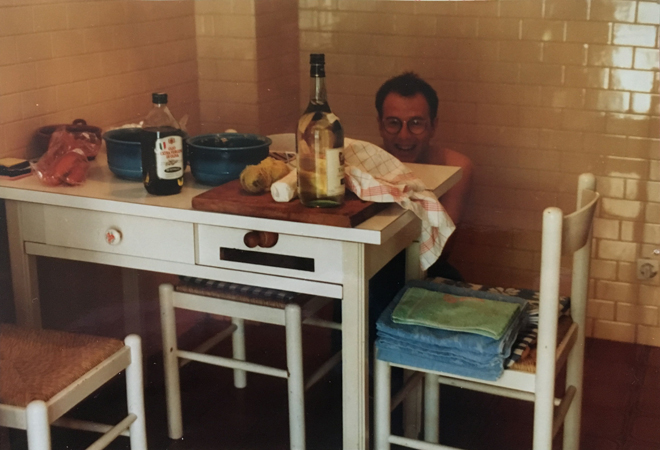
The following year, 1988, I returned to Ventimiglia and this time stayed in Manuela's flat which was only five minutes from the beach.
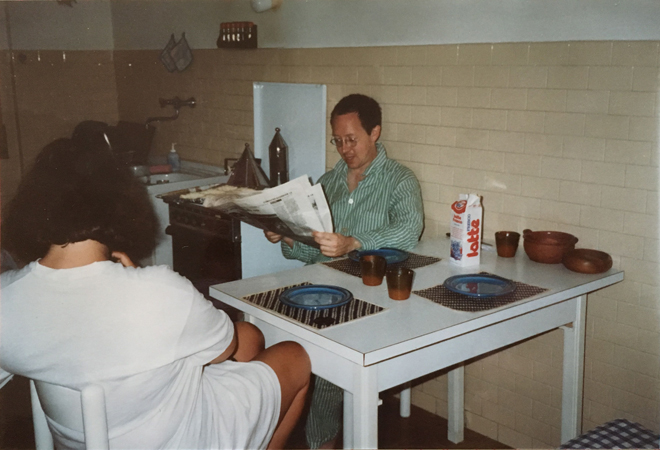
Here we are waiting for some home-made croissants to be cooked for breakfast.
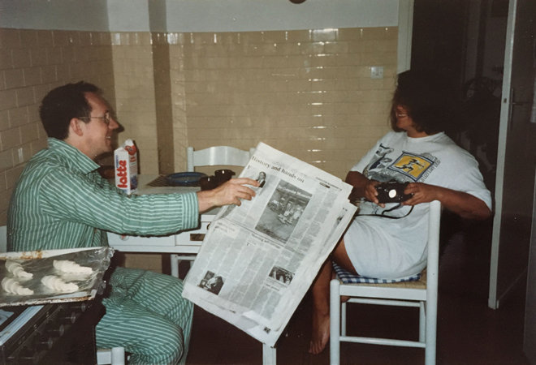
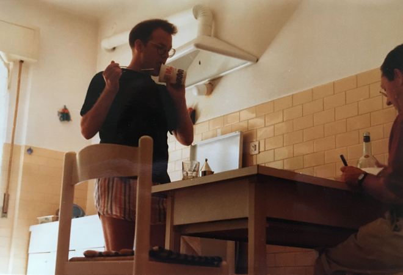
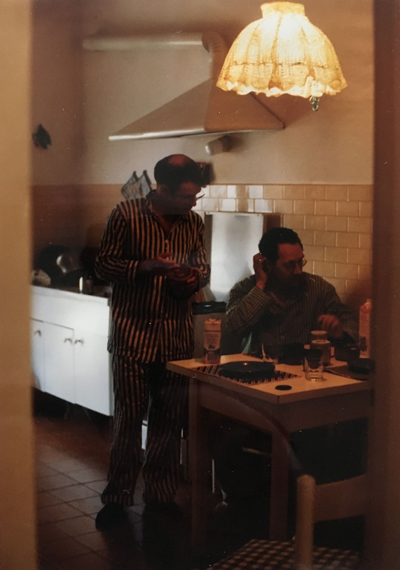
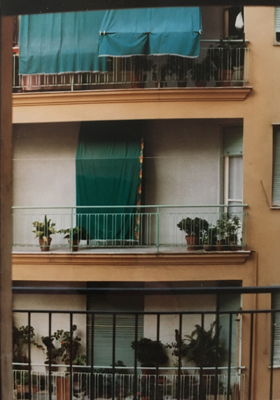
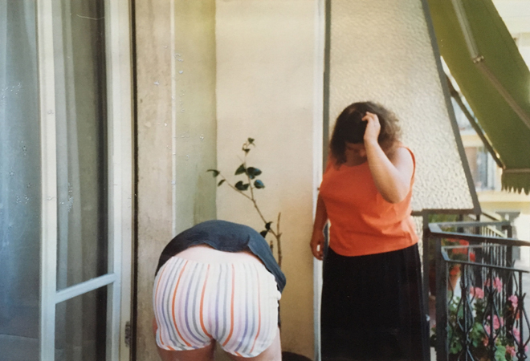
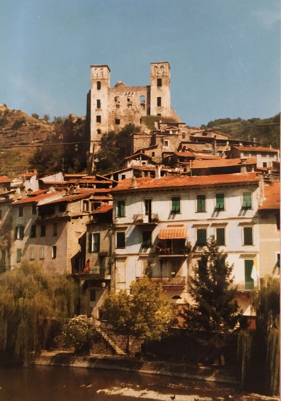
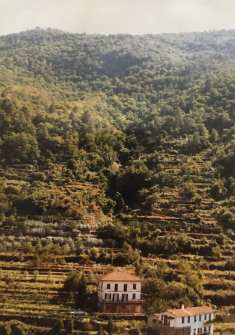
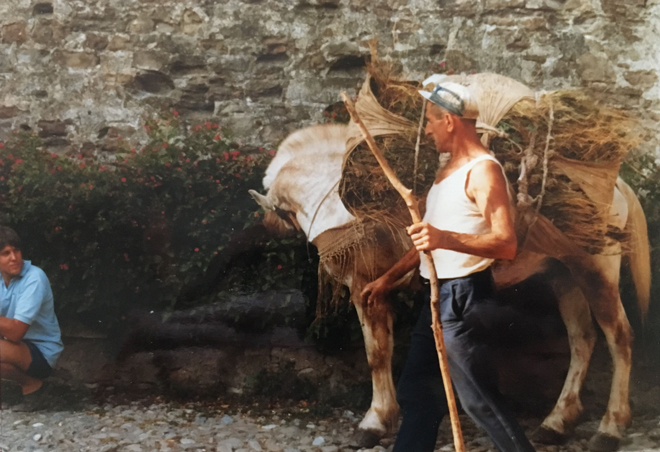
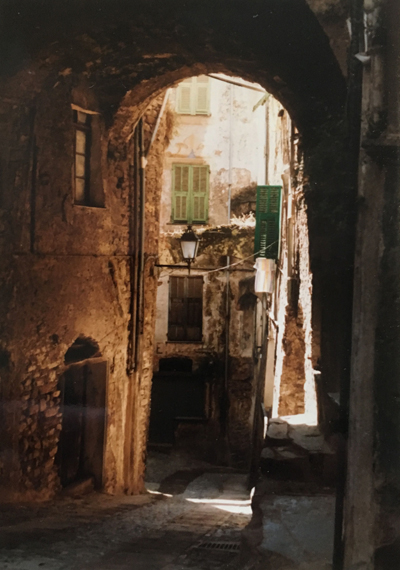
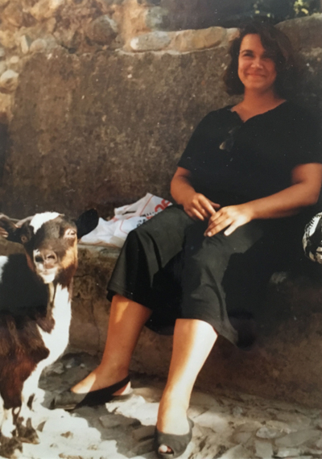
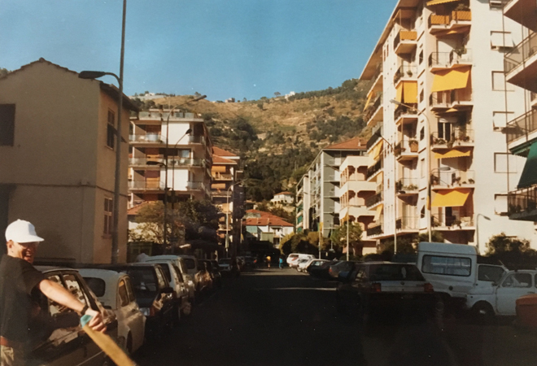
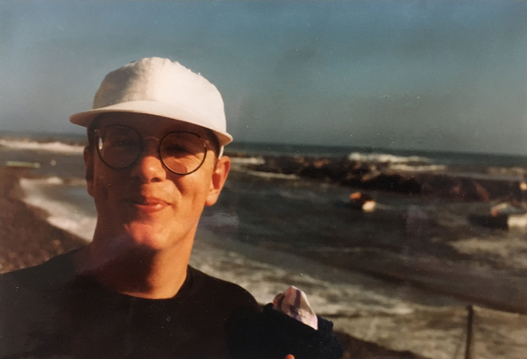
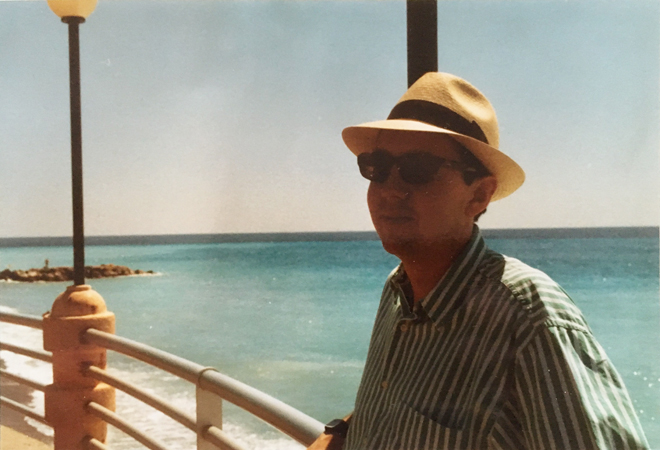
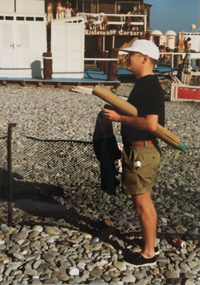
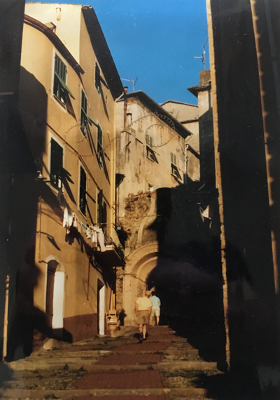
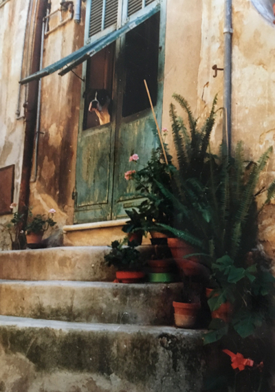
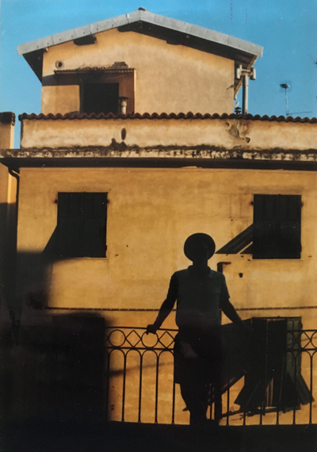
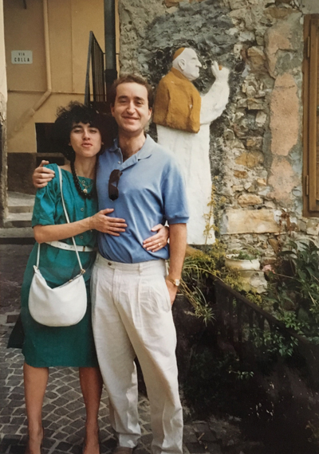
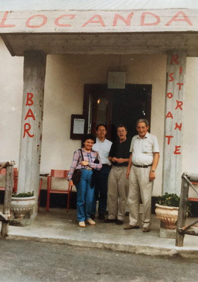
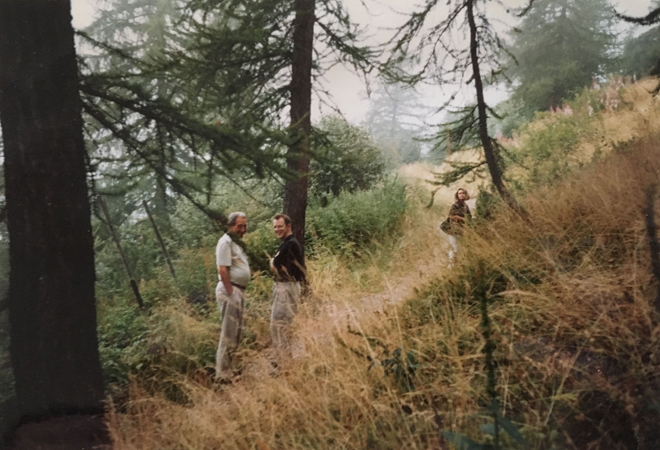
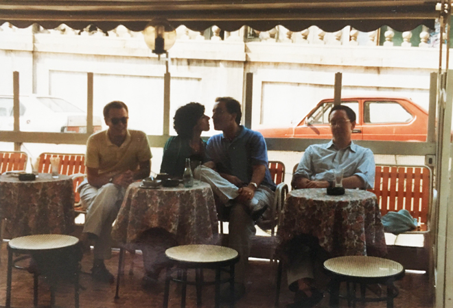
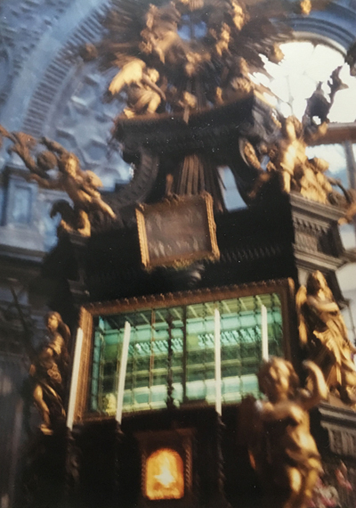
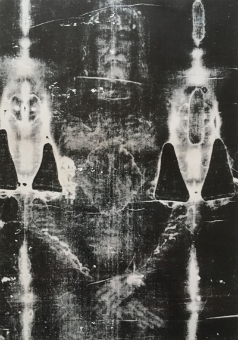
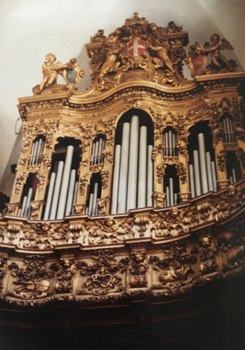
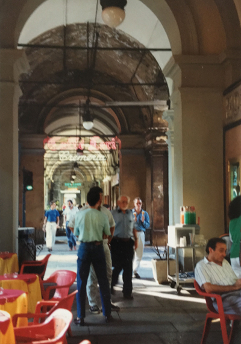
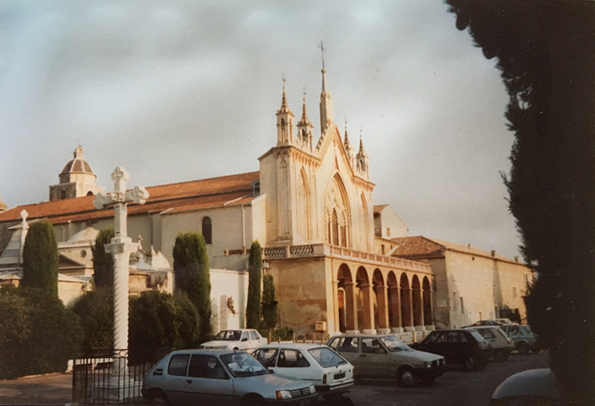
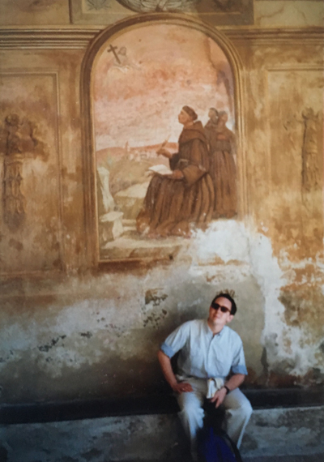
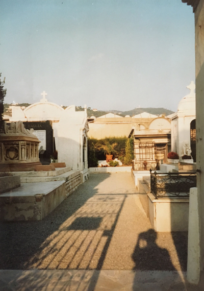
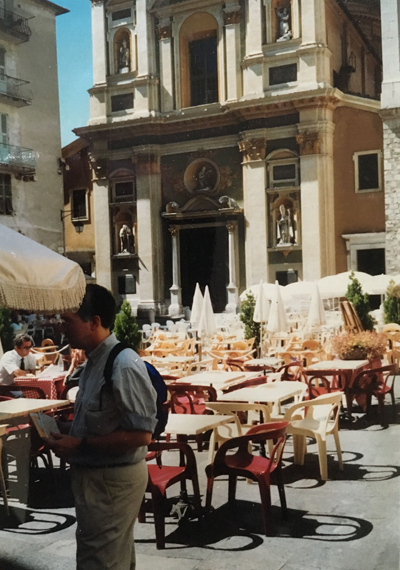
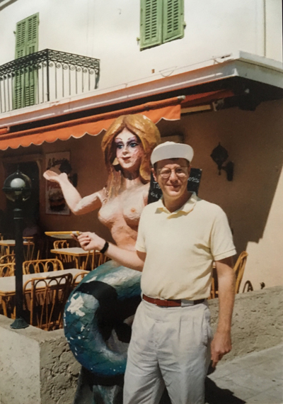
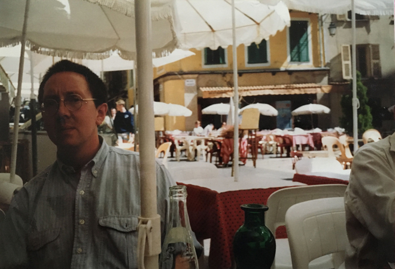